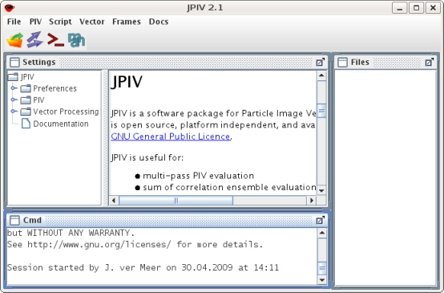
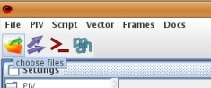
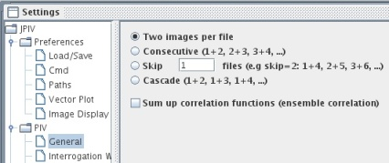
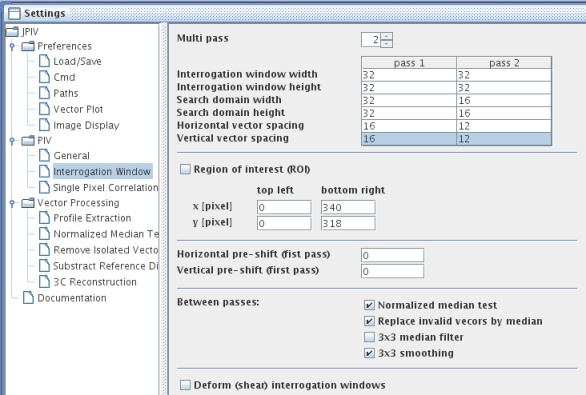
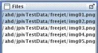
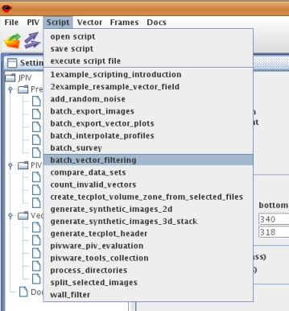
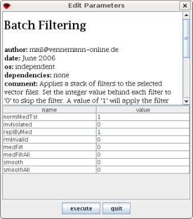
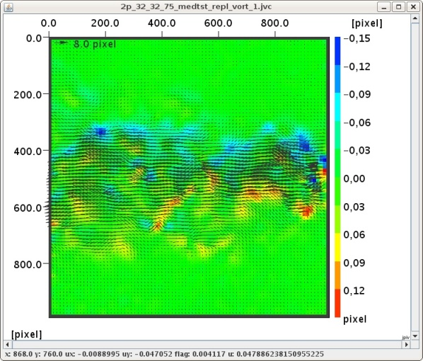

home
download
introduction
guide
how to ...
documentation
scripting
forum
javadoc
imprint
Read this few paragraphs to get an idea of the input-output procedure.
The program is launched by clicking on the icon on the download page. If you use JPIV the first time, a settings file (jpiv_settings.ser) is created in your home directory. The main-frame of the program contains three sub-windows. The "Settings" window on the left side gives you concise access to all properties. The "Files" window on the right maintains an interactive list of the image and vector files you are currently working with. The "Cmd" window is used for system output and scripting.

The user interface just after startup.
The procedure for PIV image evaluation - and other operations - in general:
1. Load some image file names into the "Files" frame.
2. Modify the properties on the panels in the "Settings" frame.
3. In the "Files" frame, select the files you want to process.
4. Start the processing by selecting a command from the drop down menus.
5. Display the result by double clicking on a filename in the "Files" window.
Example:
Use the File-Choose menu item or the corresponding toolbar icon to choose some image files. If you do not have PIV images at hand, you will find some on the download page.

Expand the general parameters tab and edit the parameters according to your images.

Edit the interrogation window parameters.

Select the image files you want to process.

From the PIV drop down menu, choose the command run PIV image analysis to start the image evaluation. You are asked about a file name for the result. When the evaluation is finished, the result vector files are appended to the file list.
Congratulations - you finished your first PIV evaluation! You can double click the result vector fields in the Files window, to get them visualized. Expand the Preferences - Vector Plot tab in the Settings window to edit the plotting parameters.
If you like, you can now start post processing your vector data. Select the result vector files, and apply the commands of the Vector drop down menue on them.

This is the point, where you may want to add some additional functionality to JPIV, like scripts for batch processing, masking, synthetic image generation, joining and splitting images, directory processing, native libraries for reading LaVision IMX and IM7 image data, and offline documentation files. Just download the JPIV script library, extract the files to your hard drive and tell JPIV where to find the unpacked directory, as explained in the documentation section. Restart JPIV to list the scripts of the jpivlib/jsc directory in the Scripts drop-down menu.
Now, you can use a more convenient method for post processing. Select your raw PIV evaluation files. Choose the batch filtering script from the Script menu. Alternatively, you can apply the filters directly via the Vector drop down menu.

A dialog appears. Select the filters you want to apply and how often they should be repeated. Again, you are asked about a file name for the results.

Analog to the operations above, select the filtered result files and apply the drop down command Vector - normal vorticity to calculate the vorticity. To show the vorticity as a background color plot, go to the tab JPIV - Preferences - Vector Plot in the settings frame. In the section 'Background color' mark the check box 'Color-coding'. Make sure that 'Data-column' is set to '4'. Finally, double click the latest result files to show them on screen.
